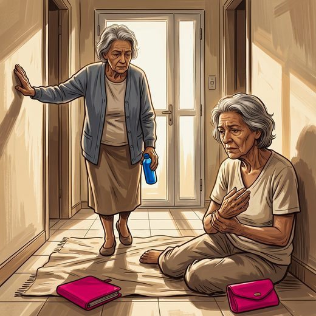

Ferramenta desta aula
Quedas — estratificação de risco. Roda no navegador, sem cadastro.
Consulta rápida à beira do leito
Condutas, doses e interações.
Referências da aula · 7
- Rodrigues RAP, Fernandes DS, Silva MPAE, et al. Predictive capacity of the Integrated Care for Older People screening tool to assess fall risk in older adults in geriatric care. J Clin Nurs. 2026;35(2):804-812. doi:10.1111/jocn.70063.DOI
- Ramos KA, et al. Fall-risk-increasing drugs and falls in older adults: SABE cohort. Arch Gerontol Geriatr. 2023. doi:10.1016/j.archger.2023.105127. PMID 37480721.PubMedDOI
- Montero-Odasso M, van der Velde N, Martin FC, et al. World guidelines for falls prevention and management for older adults: a global initiative. Age Ageing. 2022;51(9):afac205. PMID 36178003. doi:10.1093/ageing/afac205.PubMedDOI
- 2023 American Geriatrics Society Beers Criteria® Update Expert Panel. American Geriatrics Society 2023 updated AGS Beers Criteria® for potentially inappropriate medication use in older adults. J Am Geriatr Soc. 2023;71(7):2052-81. PMID 37139824. doi:10.1111/jgs.18372.PubMedDOI
- Cruz-Jentoft AJ, Bahat G, Bauer J, et al. Sarcopenia: revised European consensus on definition and diagnosis. Age Ageing. 2019;48(1):16-31. PMID 30312372. doi:10.1093/ageing/afy169.PubMedDOI
- O’Mahony D, Cherubini A, Guiteras AR, et al. STOPP/START criteria for potentially inappropriate prescribing in older people: version 3. Eur Geriatr Med. 2023;14(4):625-32. PMID 37256475. doi:10.1007/s41999-023-00777-y.PubMedDOI
- Freitas EV, Py L, organizadores. Tratado de Geriatria e Gerontologia. 5ª ed. Rio de Janeiro: Guanabara Koogan; 2022.